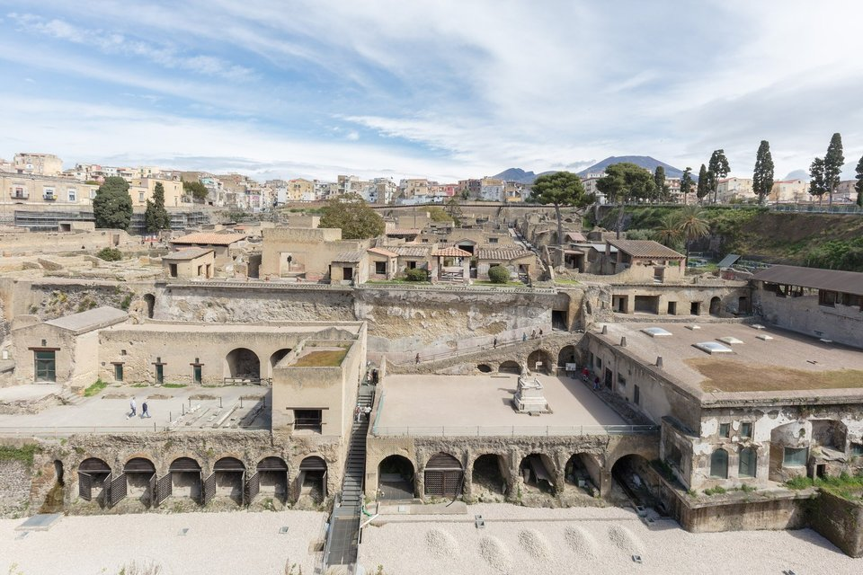

Italy · Ercolano
Herculaneum audio guide
10 stops · 10 min · offline · plays as you arrive
The guide price is €2.99. This button is a placeholder. It does not open checkout and does not take payment. Email hello@getearwise.com.
Ten offline stops trace how pyroclastic surges in AD 79 sealed Herculaneum far deeper than Pompeii—preserving upper balconies, carbonized wooden doors, bright wall mosaics, and skeletons in the shoreline boathouses.
Stops
- 1
A town twenty metres down
Look down from the modern overlook across the twenty-metre excavation pit below Ercolano's apartment blocks.
Free sample: stop 1
Play0:00 / –:–– - 2
The last shore
Walk onto the ancient waterfront beside the arched stone boathouses where more than three hundred residents sheltered in AD 79.
Locked — included when you buy - 3
The Suburban Baths
Visit the Suburban Baths beside the old beach, remarkably intact down to wooden doors and heated plaster vaults.
Locked — included when you buy - 4
The House of the Deer
Step past the seafront House of the Deer, named for marble deer statues and open terraces that once faced the Bay of Naples.
Locked — included when you buy - 5
The House of the Wooden Partition
Look inside the House of the Wooden Partition, where a carbonized folding timber screen still separates atrium from living room.
Locked — included when you buy - 6
The Samnite House
Compare the older second-century BC Samnite House next door, retaining pre-Roman stucco loggias around its courtyard.
Locked — included when you buy - 7
Neptune and Amphitrite
Admire the glittering blue-and-gold glass mosaic of Neptune and Amphitrite in the courtyard summer dining room.
Locked — included when you buy - 8
The House of the Bicentenary
Visit the grand House of the Bicentenary along the main street, uncovered in 1938 two centuries after Bourbon excavations began.
Locked — included when you buy - 9
The priests of the emperor
Walk along the Decumanus Maximus past the College of the Augustales, painted with frescoes of Hercules.
Locked — included when you buy - 10
The Villa of the Papyri
Finish near the access ramp to the buried Villa of the Papyri, whose library of carbonized scrolls is still being read by X-rays.
Locked — included when you buy
On the map
All 10 stop pins for this guide are marked. Open map